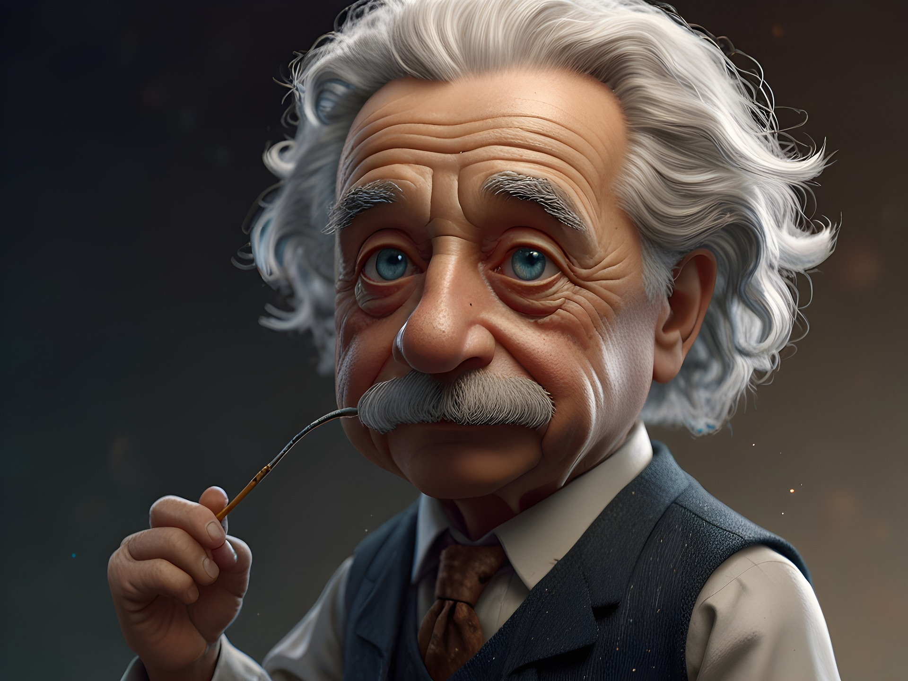

ALBERT EINTEIN
14 MARCH 1879 TO 18 APRIL 1995
INDIAN WISE MAN
Albert Einstein was a brilliant physicist who revolutionized our understanding of space, time, and energy with his theory of relativity. Born in Germany in 1879, he later became a Swiss and then an American citizen. Einstein is best known for his formula E=mc², which describes the equivalence of mass and energy. He won the Nobel Prize in Physics in 1921 for his explanation of the photoelectric effect. Beyond science, Einstein was a passionate advocate for peace, civil rights, and education. He died in 1955, leaving a lasting legacy as one of the greatest scientists of all time.
BIOGRAPHY
- Early Life and Education
- Nobel Prize and Beyond
- Theory of Relativity
- Humanitarian Efforts
- Early Life and Education
- Nobel Prize and Beyond
- Theory of Relativity
- Humanitarian Efforts